COMMODORE BUSINESS MACHINES
Pierwszym komputerem tej marki, który znalazł się w mojej kolekcji, był
C=+4. Wystrój zewnętrzny ma chyba najładniejszy ze wszystkich komputerów tej firmy.
Następny trafił mi się C128. Syn używał go do tworzenia efektów dźwiękowych podczas
gry na gitarze, co szybko skończyło się uszkodzeniem SIDa. Niestety, konstrukcje firmy
Commodore nie są "idiotensicher" i potrafią uszkodzić się nawet przy przełączaniu dżojstika
z gniazda do gniazda.
PET 2001
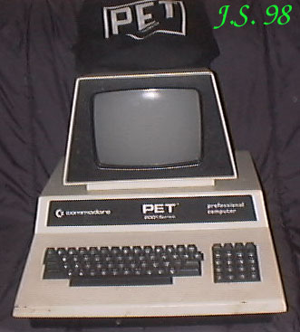
Dziadunio - tak tę maszynkę nazwał "Bajtek". W mojej kolekcji
od 1993r. Na monitorze oryginalny pokrowiec. Obudowa wykonana całkowicie z
blachy stalowej.
Procesor 6502 /1MHz
RAM 8kB rozszerzalna do 32kB
ROM 14kB z możliwością rozszerzenia do 26kB
Procesor graficzny - brak
Rozdzielczość maksymalna (tylko tryb tekstowy) 40 znaków w 25
liniach.
Grafika 62 znaki semigraficzne
Wbudowany 9" monitor monochromatyczny (zielony)
Porty: IEE488, USER PORT, 2 złącza do magnetofonu
Zewnętrzne peryferia (FDD, magnetofon,drukarka, modem) dołączane
do portu IEEE488 (FDD) i USER PORT - reszta
Dźwięk: brak
4016
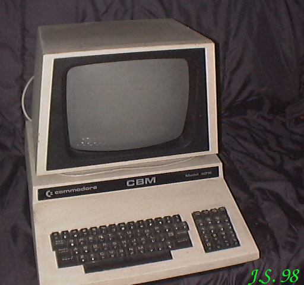 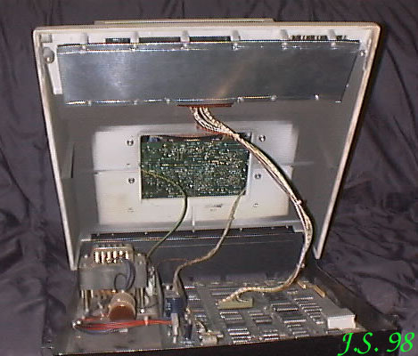
To już nowsza wersja PETa. Posiada zmienioną płytę główną,
większy monitor, lepsze możliwości graficzne, wydaje nawet dźwięki.
Zdjęcie po lewej - wygląd zewnętrzny, zdjęcie po prawej ukazuje
tajniki wnętrza komputera: na dole po lewej zasilacz, po prawej płyta główna. W
prostokątnym otworze widoczna płyta monitora, powyżej - klawiatura.
Komputer otwiera się jak maska samochodu, jest nawet wspornik
do zablokowania w położeniu otwartym.
Wadą całej linii PETów są znaczne rozmiary i ciężar.
Procesor 6502 / 1MHz.
RAM 16kB z możliwością rozszerzenia do 96kB
ROM 14kB z możliwością rozszerzenia do 26 kB
Procesor graficzny CRTC 6845.
Rozdzielczość maksymalna (tylko tryb tekstowy) 80 znaków w 24
liniach
Grafika: 62 znaki semigraficzne
Tekst: 2 tryby tekstowe 80 i 40 kolumn w 25 liniach.
Wbudowany 12" monitor monochromatyczny (zielony).
Porty: IEE488, USER PORT, 2 gniazda magnetofonu.
Urządzenia peryferyjne: FDD (IEEE488), drukarka, magnetofon,
generator dżwięku typu Covox
Dźwięk: wbudowany beeper (piezoelektryczny).
8032
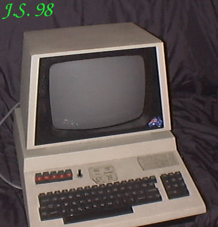
Pamięć RAM 32kB. Pozostałe parametry jak w 4016. Ten egzemplarz trafił do
mnie z Australii. Posiada szereg modyfikacji (co widać także na zewnątrz).
610
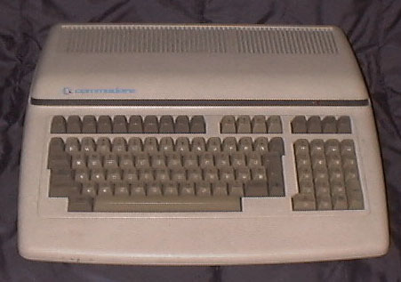 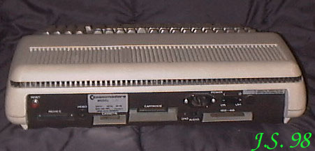
Ten komputer stanowi połączenie linii PET i C64. Komputery PET
przeznaczone były głównie do zastosowań biurowych i, po wprowadzeniu modelu
VIC20 a potem C64, sprzedaż ich zaczęłą gwałtownie spadać. Koniecznością było
wprowadzenie modelu, który łączyłby zalety nowej linii i współpracował z
pozostałą na rynku dużą ilością urządzeń peryferyjnych z interfejsem IEEE488.
Tak powstał nowy model Commodore model 610, na rynku znany również jako
B128, a także jego wersja rozwojowa - model 710.
Procesor 6509 / 1MHz.
RAM 128kB z możliwością rozszerzenia do 256kB
ROM 24kB
Procesor graficzny CRTC 6845.
Rozdzielczość maksymalna ?
Grafika: 62 znaki semigraficzne
Tekst: 2 tryby tekstowe 80 i 40 kolumn w 25 liniach.
Wyjście composite video NTSC (DIN5).
Porty: IEEE488, gniazdo kartridża, gniazdo magnetofonu,
RS232.
Urządzenia peryferyjne: FDD (IEEE488), drukarka, magnetofon
Dźwięk: Sound Interface Device (SID) 6581 -trzykanałowy
syntezator dźwięku .
VIC 20
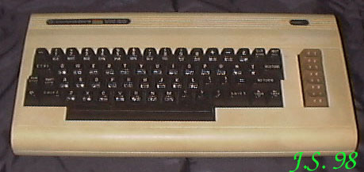
Procesor 6502 / 1,4MHz.
RAM 5kB z możliwością rozszerzenia do 8 lub 16kB
ROM 20kB
Procesor graficzny MPS6560 (NTSC) / MPS6561 (PAL)
Rozdzielczość maksymalna 176 X 184
Grafika: wielokolorowa (?)
Tekst: 23 znaki w 22 liniach.
Wyjście composite video NTSC lub PAL (DIN5).
Porty: Gniazdo kartridża, gniazdo magnetofonu, 2 gniazda
dżojstika.
Urządzenia peryferyjne: FDD, drukarka, magnetofon, dżojstik
Dźwięk: generator dźwięku zespolony z układem wizyjnym .
64
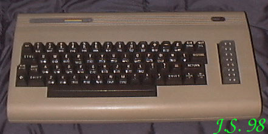
Procesor 6510 / 1MHz.
RAM 64kB
ROM 20kB
Procesor graficzny MPS6567.
Rozdzielczość maksymalna 200 X 320.
Grafika: maks. 16 kolorów. 200 X 160 / 8 kolorów, 200 X 320 / 2
kolory.
Tekst: 40 kolumn w 25 liniach.
Wyjście composite video PAL / NTSC (DIN8).
Porty: USER PORT, serial, gniazdo kartridża, gniazdo magnetofonu,
2 gniazda dżojstika..
Urządzenia peryferyjne: FDD, drukarka, magnetofon, dżojstik.
Dźwięk: Sound Interface Device (SID) 6581 - trzykanałowy
syntezator dźwięku .
128
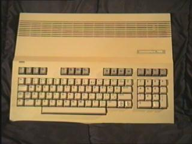
Procesor 8502/1MHz i Z80/2,4MHz.
RAM 128kB rozszerzalna do 512kB.
ROM 48kB
Procesor graficzny 8564 (NTSC) / 8566 (PAL).
Rozdzielczość maksymalna 200 X 640
Grafika: 200 X 320 przy 8 kolorach, 200 X 640 przy 2
kolorach
Tekst: 2 tryby tekstowe 80 i 40 kolumn w 25 liniach.
Wyjście composite video NTSC lub PAL (DIN8).
Porty: USER PORT, serial, gniazdo kartridża, gniazdo magnetofonu,
2 gniazda dżojstika.
Urządzenia peryferyjne: stacja dysków 5,25" lub 3,5", drukarka, magnetofon
Dźwięk: Sound Interface Device (SID) 8580 -trzykanałowy
syntezator dźwięku .
128D
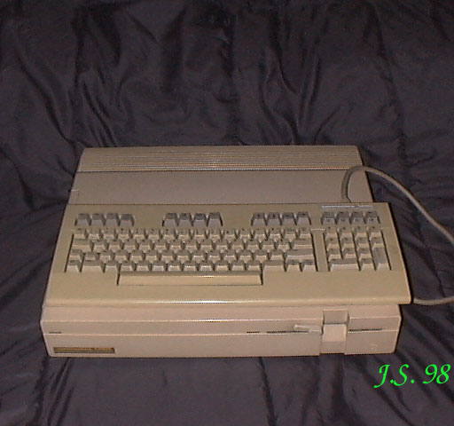
Procesor 8502/1MHz i Z80/2,4MHz.
RAM 128kB rozszerzalna do 512kB.
ROM 48kB
Procesor graficzny 8564 (NTSC) / 8566 (PAL).
Rozdzielczość maksymalna 200 X 640
Grafika: 200 X 320 przy 8 kolorach, 200 X 640 przy 2
kolorach
Tekst: 2 tryby tekstowe 80 i 40 kolumn w 25 liniach.
Wyjście composite video NTSC lub PAL (DIN8).
Porty: USER PORT, serial, gniazdo kartridża, gniazdo magnetofonu,
2 gniazda dżojstika.
Urządzenia peryferyjne: wbudowany napęd dwustronny 5,25",
drukarka, magnetofon
Dźwięk: Sound Interface Device (SID) 8580 -trzykanałowy
syntezator dźwięku .
16
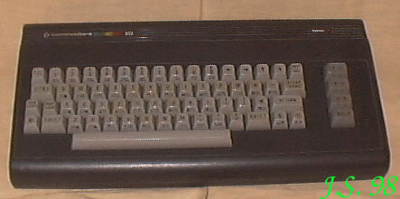
Procesor 7510 lub 8510 / 1MHz.
RAM 16kB z możliwością rozszerzenia do 256kB
ROM 32kB
Procesor graficzny 7360 (TED).
Rozdzielczość maksymalna 200 X 320
Grafika: 160 X 200 przy 4 kolorach z palety 121.
Tekst: 40 kolumn w 25 liniach.
Wyjście composite video NTSC lub PAL (DIN5).
Porty: serial, gniazdo kartridża, gniazdo magnetofonu, 2 gniazda
dżojstika.
Urządzenia peryferyjne: FDD, drukarka, magnetofon, dżojstik.
Dźwięk: dwukanałowy generator dźwięku (fragment układu
TED).
116
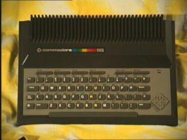
Procesor 7510 lub 8510 / 1MHz.
RAM 16kB z możliwością rozszerzenia do 256kB
ROM 32kB
Procesor graficzny 7360 (TED).
Rozdzielczość maksymalna 200 X 320
Grafika: 160 X 200 przy 4 kolorach z palety 121.
Tekst: 40 kolumn w 25 liniach.
Wyjście composite video NTSC lub PAL (DIN5).
Porty: serial, gniazdo kartridża, gniazdo magnetofonu, 2 gniazda
dżojstika.
Urządzenia peryferyjne: FDD, drukarka, magnetofon, dżojstik.
Dźwięk: dwukanałowy generator dźwięku (fragment układu
TED).
Plus 4
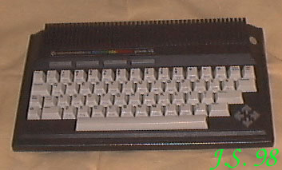
Procesor 7510 lub 8510 / 1MHz.
RAM 16kB z możliwością rozszerzenia do 256kB
ROM 32kB
Procesor graficzny 7360 (TED).
Rozdzielczość maksymalna 200 X 320
Grafika: 160 X 200 przy 4 kolorach z palety 121.
Tekst: 40 kolumn w 25 liniach.
Wyjście composite video NTSC lub PAL (DIN5).
Porty: serial, gniazdo kartridża, gniazdo magnetofonu, 2 gniazda
dżojstika.
Urządzenia peryferyjne: FDD, drukarka, magnetofon, dżojstik.
Dźwięk: dwukanałowy generator dźwięku (fragment układu
TED).
TV GAME 2000K
Jeszcze jeden egzemplarz marki Commodore. Jest to gra telewizyjna z ery
prekomputerowej. Nie jest urządzeniem programowalnym, nie ma procesora ani pamięci.
W latach 70-tych ub. wieku wielką popularnością cieszyły się gry telewizyjne typu ping-pong.
Czasopisma dla elektroników amatorów zamieszczały opisy budowy takich urządzeń z układów TTL.
Kres ich popularności położyło pojawienie się gier programowalnych (Atari 2600) i pierwszych
komputerów ośmiobitowych.
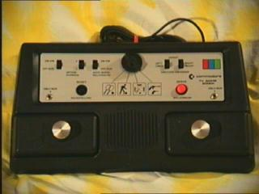
Gra przeznaczona jest dla 1 lub 2 graczy, a po podłączeniu dodatkowych manipulatorów
może jednocześnie grać 4 graczy. Do wyboru (poprzez ustawienie obrotowego przełącznika) są
4 gry: tenis, koszykówka, pelota i strzelanie do celu. Do tej ostatniej gry wymagany jest
pistolet optyczny. Za pomocą osobnych przełączników można wybrać opcje: ilość graczy,
automatyczny serwis i stopień trudności dla lewego i prawego gracza. Czarny przycisk służy
resetowania gry, czerwony do serwisu ręcznego.
Na ekranie wyświetlany jest obraz kolorowy.
Zasilanie 9V AC 0,5A.
|